investigation
investigation
Jaffna Monitor hellojaffnamonitor@gmail.com 15 Part-2 investigation Achchuthan's Empire: Unmasking the LTTE's Covert Revival Network The Double Life of Pugalenthi Master: BY: Jaffna Monitor Investigation Team A n essential ally in Achchuthan's (Sivarasa Pirunthapan) network is his brother-in-law, Pugalenthi Master, a former intelligence leader within the LTTE. He earned the title "Master" by teaching LTTE fighters, as it was customary within the LTTE to refer to anyone who conducted training or classes for its fighters as "Master." Pugalenthi Master, born as Pugalavan, is the elder brother of Sakalya Pirunthapan, whose LTTE alias was Rathika. Rathika, a dedicated second- year medical student at the Tamil Eelam Medical College, underwent training within LTTE ranks before marrying Achchuthan on October 4, Pugalenthi Master
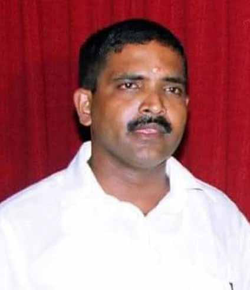
Jaffna Monitor hellojaffnamonitor@gmail.com 16 2004. The ceremony took place in Kilinochchi during a rare period of peace in Sri Lanka. Sources close to the couple reveal that the marriage was arranged, with Achchuthan insisting on marrying a woman from the Vellalar caste, the same as his own. This decision was influenced by both family expectations and his strict adherence to caste traditions. Both Achchuthan and his father, Sivarasa—known for their strong caste views—were determined that his bride would align with specific caste standards. Reportedly, this insistence stemmed from the fact that Achchuthan's elder brother and one of his younger brothers had married women considered slightly lower in caste status than Vellalar, a situation that had allegedly caused some discontent within the family. Pugalenthi Master, born as Pugalavan, hails from the villages of Vimankaman and Urumpirai. Born in the mid-1970s to Thevarajah, an apothecary, Pugalavan began his education at Mahajana College, where he studied until his O-Levels before transferring to St. John's College. His family has long- standing connections with the LTTE. His elder brother, Kesavan, played a significant role in the movement by working with the LTTE's bank and its radio station, Pulikalin Kural. Known as "Pulikalin Kural" Viswalingam, Kesavan was renowned for his political commentary and his participation in political debates aired on Pulikalin Kural. Another sister, Muthamizhchelvi, is the only sibling in the family who did not join the LTTE. She resides in London with her husband, Vithuran, and works at the Tesco supermarket pharmacy on Southend Road, Woodford Green, IG8 8GE, United Kingdom. Meanwhile, her sister Sakalya, who is married to Achchuthan (Pirunthapan), lives in France at 6A Rue Rognon, Saint Pierre d'Autils, La Rathika Muthamizhchelvi
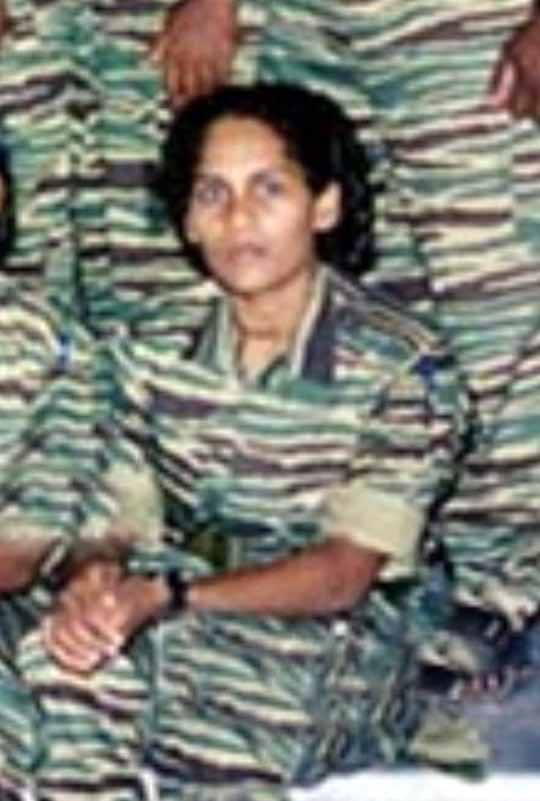
Jaffna Monitor hellojaffnamonitor@gmail.com 17 Exact location of Achchuthan's house in France Achchuthan's residence in France
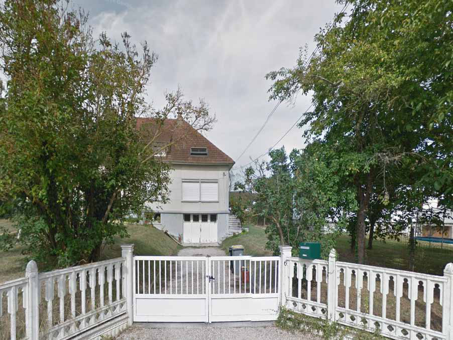
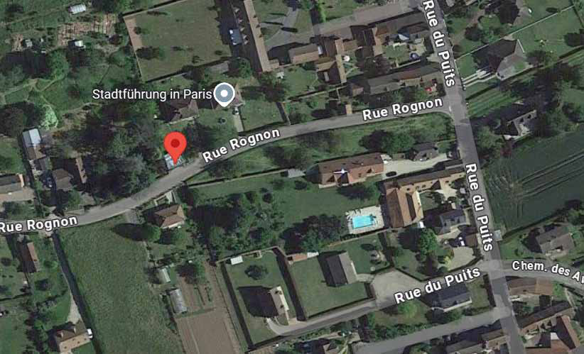
Jaffna Monitor hellojaffnamonitor@gmail.com 18 d'Autils-Longueville (Eure). However, Pugalenthi Master and Sakalya never revealed their close familial relationship during their time in the Vanni or abroad, as confirmed by credible former LTTE sources who spoke to Jaffna Monitor. A former LTTE fighter who worked closely with Pugalenthi Master for several years shared with Jaffna Monitor that he once believed Pugalenthi Master was fully transparent with him. He recalled seeing Pugalenthi Master and Sakalya together on multiple occasions, particularly around the time of the arrangements for Sakalya's marriage to Achchuthan. Despite this, Pugalenthi Master never disclosed that she was his sister. Another source who knew Achchuthan well informed Jaffna Monitor that neither Achchuthan nor his wife ever publicly acknowledged their close familial connection to Pugalenthi Master. The source described them as "neUg;gDfs;" (a colloquial Tamil term meaning "very cunning people"). Sources indicate that Sakalya, born on September 24, 1976, in Pavakkulam, Vavuniya, was the first in her family to join the LTTE, likely around 1992–93 during her O-Level studies. Her elder brother, Pugalavan followed suit during the Jaffna displacement in 1995. He initially worked under Gnanavel, the then-head of LTTE intelligence operations in Jaffna, and later under Pradeep, who oversaw intelligence activities in the region. Credible sources report that Pugalenthi Master eventually became part of Mathavan Master's team, handling veliyaga velai— special external operations—primarily based in Colombo, where he assumed increasingly significant responsibilities. Within LTTE ranks, Pugalenthi was known as an intellectual and an avid reader. He contributed to the intelligence wing's educational initiatives, editing several publications for the unit. Credible sources within the LTTE describe him as an expert in managing and planting double agents—a skill he later passed on to others in a series of training sessions. One source who attended these sessions in the mid-2000s recalled Pugalenthi's meticulous approach, especially in his lectures on handling double agents. Those who knew Pugalenthi personally often remarked on his bookish nature. A source who met him on multiple occasions described his room as perpetually filled with books, saying it "looked more like a library than a room." Pugalenthi Master
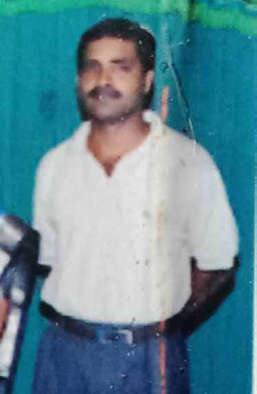
Jaffna Monitor hellojaffnamonitor@gmail.com 19 strike never materialized. They remained in position until the final days of the war in May 2009, awaiting orders that would never come. The events that unfolded in the forests of Aasikulam remain etched in memory as a profound betrayal for the LTTE fighters involved. Members of the operation confided to Jaffna Monitor that Pugalenthi's behavior had grown increasingly suspicious, stirring unease among his squad. One fighter recalled that Pugalenthi often spoke on the phone with someone overseas—a contact whose identity was unclear at the time but is now believed to have been his brother-in-law, Achchuthan, with whom he was likely plotting his own escape. Tensions between Pugalenthi and his team soon came to a Pugalenthi's Betrayal in Aasikulam: The Inside Story of Deception Between January and February 2009, under direct orders from LTTE intelligence chief Pottu Amman and LTTE leader Prabhakaran, an elite team of Black Tiger commandos embarked on a high-stakes mission from Pudukkudiyiruppu, moving through Nedunkeni and into Aasikulam in Vavuniya. The exact objective of their mission remains shrouded in secrecy, with conflicting reports hinting at a planned strike on a significant military or public site in the South. Despite Aasikulam being under government control, its proximity to LTTE-held areas and the cover provided by dense surrounding forests enabled LTTE presence. One Black Tiger operative involved in the mission confided to Jaffna Monitor that, from Aasikulam, it was possible to navigate westward along forest paths leading ultimately to Colombo. This elite unit was commanded by Pugalenthi Master, with Nimalan, another intelligence leader. According to a reliable source, Pugalenthi Master and Nimalan had trained these fighters in Black Tiger camps. By the end of February 2009, the team was fully embedded in Aasikulam. Yet, despite their preparations, the anticipated Pradeep Madavan master
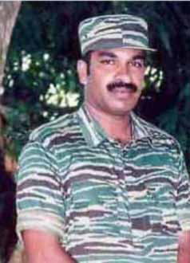
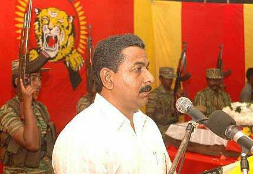
Jaffna Monitor hellojaffnamonitor@gmail.com 20 head. One fighter recounted that Pugalenthi frequently ignored essential security protocols, refusing to wear camouflage uniforms and leaving food wrappers, like biscuit packaging, scattered around. Another fighter recalled that Pugalenthi, known for his love of food, even insisted on having kottu roti brought from Vavuniya by a fighter who had traveled there from Aasikulam for intelligence work. This lack of discretion became a serious concern, culminating in a near altercation with one of the fighters over his cavalier attitude. One source confided to Jaffna Monitor that, while the squad suspected Pugalenthi might be up to something, they never imagined he would abandon them entirely. Yet, within a few days, that's precisely what he did. One evening, under the cover of dusk, Pugalenthi excused himself, pistol in hand, claiming he needed to go to the forest for a toilet break. Shortly afterward, Karvannan, a courageous fighter from the Sea Tigers, noticed suspicious movement in the direction where Pugalenthi had gone. Concerned for Pugalenthi Master's safety, Karvannan informed the squad that he would check on him. As he approached the area, Karvannan spotted Sri Lankan Army soldiers moving into position. A skirmish erupted, and Karvannan was killed by a direct shot to the chest. The LTTE squad was forced to retreat, quickly relocating to avoid further casualties. The army later recovered Karvannan's body, but the squad had no trace of Pugalenthi's whereabouts. Anxiety within the team escalated, turning to full-blown suspicion when they received a call from Pugalenthi himself, claiming he was safe and asking them to meet at a specific location. Meanwhile, an intelligence unit from Vanni cautioned them against reconnecting with Pugalenthi, warning he might either be in army custody or, given his expertise in training double agents, could have become one himself. Remaining fighters like Nimalan, Muhilan, Thamilselvan, and others grew increasingly wary, sensing the chilling possibility of betrayal. A fighter from his squad told Jaffna Monitor that when they pressed Pugalenthi Master over the phone for details about his escape, he claimed he had taken a Sinhala family hostage at gunpoint in Aasikulam and was now living Achchuthan
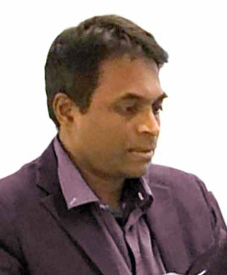
Jaffna Monitor hellojaffnamonitor@gmail.com 21 with them in Vavuniya town, using them as cover. To his comrades, the story seemed implausible. As one of them pointed out, "Aasikulam is primarily a Tamil area; there wouldn't be Sinhala families there. How could he have taken them hostage, and even if he had, how could one man with a single pistol control them and live in Vavuniya without raising suspicion? A former LTTE fighter from the squad confided to Jaffna Monitor that he believes Pugalenthi was either captured by the army or orchestrated his escape with their assistance. Another squad member, now living abroad, speculated that Achchuthan and his brother, Ilankeswaran—both known for their sharp cunning—may have facilitated Pugalenthi's escape by leveraging military contacts. During peacetime, Ilankeswaran operated covertly in Colombo for the LTTE, playing a role in the movement's procurement activities. A credible LTTE source informed Jaffna Monitor that Ilankeswaran even misappropriated funds during these operations—a story in itself. Given his time in Colombo, he likely established connections with authorities and military personnel, contacts he may have leveraged to ensure Pugalenthi's safe passage. After Pugalenthi's disappearance, the remaining fighters found themselves in a dire financial crisis, as he had been responsible for managing their funds. One squad member confided to Jaffna Monitor that at one point, they were starving, left without any food. What followed was truly heartbreaking. As the war drew to its brutal conclusion in Mullivaikkal, Ilankeswaran (left) with a Sri Lankan doctor, his close relative, on a flight to Paris en route to Lourdes on 19th September 2023 (we have hidden the face of the doctor intentionally).
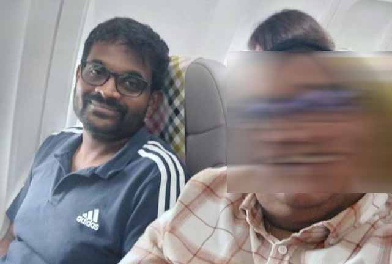
Jaffna Monitor hellojaffnamonitor@gmail.com 22 the fighters lost all contact with their command structure. Some surrendered to the ICRC, a few were killed by the Sri Lankan Army, and others managed to escape. A source revealed to Jaffna Monitor that some female fighters were killed by the army, their bodies later dragged away—a final, harrowing end for those who had once fought with fierce loyalty. Sources reveal that, with the help of his brother-in-law Achchuthan, Pugalenthi Master meticulously planned his escape route, moving from Vavuniya to Mannar and then to Tamil Nadu by boat, where his family had also sought refuge after fleeing the war. For a few years, Pugalenthi lived quietly in India, but he was far from inactive. Credible sources indicate that during this time, he attempted to orchestrate several attacks in Sri Lanka from afar with Achchuthan's support. The 2014 LTTE revival attempt stands out as one of the most serious and coordinated efforts to resurrect the group since its military defeat in May 2009. This operation was led by Suntharalingam Gajatheeban (alias Theiveegan), along with Navaratnam Navaneethan (alias Appan) and Ponniah Selvanayagam Kajeepan (alias Gobi). All three were ultimately killed in a Sri Lankan military operation. Credible sources within former LTTE ranks informed Jaffna Monitor that Achchuthan, his brother Ilankeswaran, and his brother-in-law Pugalenthi Master played a crucial role in the attempt. (We will delve further into this in our upcoming issues.) Another notable incident came to light in 2016 when Sri Lankan authorities seized a suicide jacket in Chavakacheri and arrested several LTTE operatives linked to the plot. Military Suicide jacket seized by Sri Lankan authorities in Chavakachcheri, 2016.
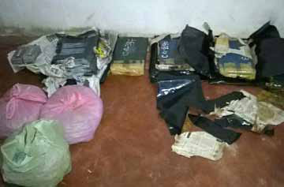
Jaffna Monitor hellojaffnamonitor@gmail.com 23 officials claimed that the jacket belonged to Pugalenthi Master and was intended for a high-profile assassination. Sources within the LTTE intelligence wing confirmed that this very jacket had indeed once been owned by Pugalenthi during his operations in Sri Lanka. Sources say that from India, Pugalenthi Master embarked on a carefully orchestrated journey, traveling through Malaysia and other countries before ultimately reaching London. This escape route, primarily facilitated by his brother-in- law Achchuthan, allowed Pugalenthi to evade capture and establish a new life in hiding. Now settled in London, his transition was further smoothed by the support of his sister, Muthamizhchelvi Vithuran. Muthamizhchelvi quietly assists Pugalenthi as he adjusts to life in the shadows from his base in London. A former squad member from the Aasikulam forest confided to Jaffna Monitor that he is still searching for Pugalenthi Master. Knowing that Pugalenthi now resides in London, he expressed his determination to confront him and demand answers to unresolved questions: "Are you the double agent you warned us about? How did you manage to escape from Aasikulam to Vavuniya? How could you live undetected in an army-controlled area by supposedly holding a Sinhala family at gunpoint? And while others in your squad faced death, how did you secure a path to safety? Was it your brother-in-law, Achchuthan, who orchestrated your escape by passing information to military intelligence?" He went on to say he would confront Pugalenthi with these ehf;if GLq;Fw (piercing) questions. Although some squad members eventually escaped, their retreat was described as ehq;fs; my;Nyhyfy;Nyhyg;gl;Lj;jhd; jg;gpNdhk; ("we escaped in utter chaos")—in stark contrast to Pugalenthi, whose departure seemed deliberate and unscathed. A former fighter posed a pointed question to Jaffna Monitor: "If Pugalenthi Master believes he has done nothing wrong, why is he in hiding?" This fighter suggests that Pugalenthi fully understands the weight of his actions. Another source, who once worked closely with Pugalenthi, revealed that many former LTTE intelligence members and associates have tried reaching out to him for a conversation. Yet, Pugalenthi remains as elusive as ever, carefully avoiding those who seek answers. Pugalenthi's marriage to a woman from Puthukudiyiruppu—a civilian uninvolved with the LTTE—was discreetly arranged by a fellow fighter, Muhunthan. While our sources confirm that his wife and children now reside in India, Pugalenthi Master has carefully woven a narrative suggesting he and his wife are estranged or divorced. However, credible sources close to the family suggest otherwise, asserting that they remain very much together. Pugalenthi Master resides in the UK without proper visa documentation, initially staying with his sister, Muthamizhchelvi, before relocating to a separate residence. Credible sources reveal that Achchuthan has traveled to the UK multiple times to meet his brother-in- law, with Pugalenthi playing a pivotal role as a key strategist within Achchuthan's intricate web of deception. Nimalan's saga There's an intriguing story about Nimalan, one of the key figures in the Aasikulam operation. A native of Vallipuvanam, Puthukudiyiruppu, Nimalan was a highly skilled member of the LTTE intelligence wing who primarily operated undercover in Colombo, often in the heart of enemy territory. His covert work came
Jaffna Monitor hellojaffnamonitor@gmail.com 24 to an abrupt end in 1994 when he was arrested. However, he was released in 2001 during the ceasefire period. Remarkably, despite his past capture, Nimalan was once again sent back to Colombo on clandestine assignments under orders from LTTE intelligence chief Pottu Amman. Sources shared with Jaffna Monitor that Nimalan's primary mission was to closely monitor Tamil National Alliance (TNA) MPs who had been handpicked and backed by the LTTE. During the time when the TNA held a formidable 22 seats in Parliament, it was Nimalan who kept a watchful eye on their movements, discreetly tracking their activities and loyalties. He reported their every move to LTTE leaders in Vanni. Like Pugalenthi Master, Nimalan also managed to escape from Aasikulam, navigating through Mannar and eventually reaching India by boat. Using his contacts at TamilNet, he successfully made his way to Germany as early as 2012. Credible evidence obtained by Jaffna Monitor suggests that, once settled in Germany, Nimalan began reaching out to his former intelligence wing comrades during 2012 and 2013—many of whom had surrendered and undergone rehabilitation. Calling from a German number, he attempted to rally support for a new venture. However, his efforts proved unsuccessful, failing to win over any of his former associates. Now residing in Germany, Nimalan has emerged as one of the central figures among the remnants of the LTTE's intelligence wing. A former LTTE intelligence operative, both amused and bitter, confided to Jaffna Monitor: "The intelligence leaders who abandoned Nimalan lighting an oil lamp at a pro-LTTE event in Germany, 2013.
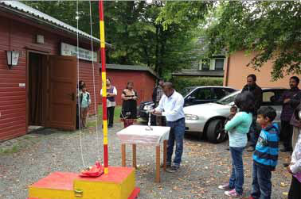
Jaffna Monitor hellojaffnamonitor@gmail.com 25 fighters in Sri Lanka and escaped like cowards have regrouped in Europe, now establishing a shadow LTTE intelligence network." Questioning their motives, he added, "It's likely they're either busy collecting money from the diaspora or simply making unnecessary noise—like the Tamil proverb says, 'wearing silangai at the waist during intimate moments.'" He implied that these former intelligence leaders, who failed to act when it mattered most, are now making irrelevant noises without meaningful action, much like the misplaced clang of silangai. At the helm of this new network is Thennavan, a former LTTE intelligence leader known for his skill in smuggling banned goods into LTTE-controlled areas, often by bribing Sri Lankan officials. With the recent passing of Vinayagam—the de facto leader of the LTTE intelligence remnants in Europe—Thennavan has been steadily positioning himself to assume this influential role. One LTTE intelligence source recounted a memorable instance involving Pottu Amman, who, with evident pride, once instructed him to look down at his feet. Sporting a pair of Adidas shoes, Pottu Amman explained that they were a gift from Thennavan. Smiling, he then held up a sleek coffee cup, announcing with satisfaction that it, too, had been gifted by Thennavan. The source who narrated this story remarked, "This scenario might give you some insight into where exactly our struggle went wrong." LTTE Intelligence Wing Chief Pottu Amman, with Charles, LTTE Chief of Military Intelligence, appearing on the left.
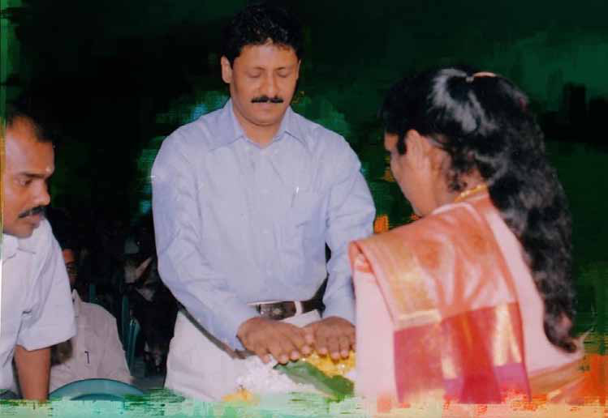